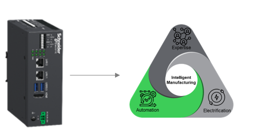

Information about EcoStruxure Automation Expert - Soft dPAC for Windows and EcoStruxure Automation Expert - Soft dPAC for Linux is available in the EcoStruxure Automation Expert - Soft dPAC installation package.
By default, Local Test (simulation) mode and EcoStruxure Automation Expert - Soft dPAC are using the same port number to communicate with EcoStruxure Automation Expert.
If both, Local Test (simulation) mode and EcoStruxure Automation Expert - Soft dPAC are running at the same time on the same computer, it is not possible to log in and deploy an application to the Local Test (simulation mode).
To be able to log in and deploy to simulation controller, change the EcoStruxure Automation Expert - Soft dPAC Manager port number to an unused port. The default value is 51499.
For support on installation, contact your local administrator.
EcoStruxure Automation Expert - Soft dPAC for Windows does not support the following services:
Discovery from the Physical devices editor
Set remotely the IPv4 address from the Physical devices editor
Locate remotely
Diagnostics from the Physical devices editor
For more information on how to commission EcoStruxure Automation Expert - Soft dPAC for Windows, refer to EcoStruxure Automation Expert User Manual.
Deployment Not Possible with EcoStruxure Automation Expert - Soft dPAC for Windows
If you are in the following situation:
Run a project in EcoStruxure Automation Expert V22.0.
Perform some online modifications.
Archive the entire project.
Unarchive the project withEcoStruxure Automation Expert V22.1 or later.
Migrate all EcoStruxure EcoStruxure Automation Expert - Soft dPAC for Windows toUnarchive the project with EcoStruxure Automation Expert V22.1 or later. V22.1 or later.
Execute optionally the command Clean.
Execute the command Deploy.
The command Deploy is unsuccessful and the error message Incremental- compiled FBType is not allowed for a clean-deploy is displayed. Some information is missing in the project file system.xml.
To fix the issue, perform the following actions:
|
Step |
Action |
|
1 |
Unarchive the project with EcoStruxure Automation Expert V22.1 or later. |
|
2 |
Open File explorer and navigate to the SnapshotCompiles folder inside the project folder. |
|
3 |
Delete all folders and files contained in the Snapshot Compilesfolder. |
|
4 |
Execute the command Clean. |
|
5 |
Migrate all EcoStruxure Automation Expert - Soft dPACfor Windows to EcoStruxure Automation Expert V22.1 or later. |
|
6 |
Execute the command Deploy Clean on each EcoStruxure Automation Expert - Soft dPAC hosted on Windows. |
|
7 |
Execute the command Deploy on each EcoStruxure Automation Expert - Soft dPAC hosted on Windows. |
EcoStruxure Automation Expert - Soft dPAC for Ubuntu does not support the following services:
Set remotely the IPv4 address from the Physical devices editor
Locate remotely
Diagnostics from the Physical devices editor
For more information on how to commission EcoStruxure Automation Expert - Soft dPAC for Ubuntu, refer to Working with Soft dPAC in the Physical Devices Editor in EcoStruxure Automation Expert - Soft dPAC User Guide.
A vulnerability in EcoStruxure Automation Expert - Soft dPAC has been fixed by restricting access to the launcher web server. It is now only accessible by the EcoStruxure Automation Expert - Soft dPAC Manager on the local network.
Multiple control platforms leveraging the EcoStruxure Automation Expert - Soft dPAC and various other industrial applications that are optimized for industrial control.
AP310 DCN – High Availability
In the fast-evolving world of intelligent manufacturing, traditional control systems are struggling to keep pace.
Enter the EcoStruxure Automation Processor, a new generation of controller, designed to meet the demands of modern industry with intelligence, built-in cybersecurity, and scalability at its core.
Designed for harsh conditions:
Conformal Coating Class G3 Harsh, ISA S71.04
Ambient temperature range of -20 C to +70 C
Redundancy for high availability
This processor reduces engineering effort, enhances system resilience, and is built to scale with future industrial demands.

The AP310 is Open Automation Enabled, supported by EcoStruxure Automation Expert IEC61499 Build-time. As part of the EcoStruxure Automation Expert solution the AP310 shall provide real time control via the Soft dPAC and shall communicate with field devices and X80 I/O modules via CRds.
To use SODB, especially HADA monitoring, it is mandatory to install .NET06 https://dotnet.microsoft.com/en-us/download/dotnet/thank-you/runtime-6.0.36-windows-x64-installer before installing EcoStruxure Automation Expert V25.0